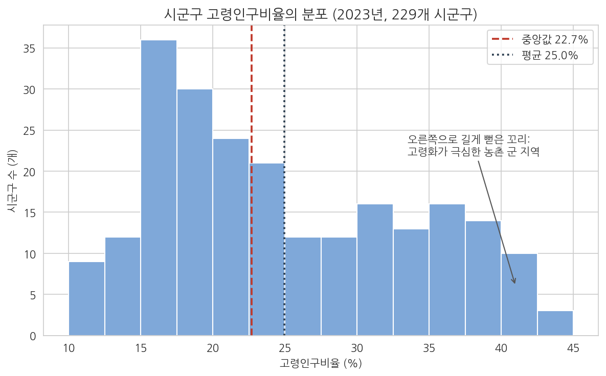
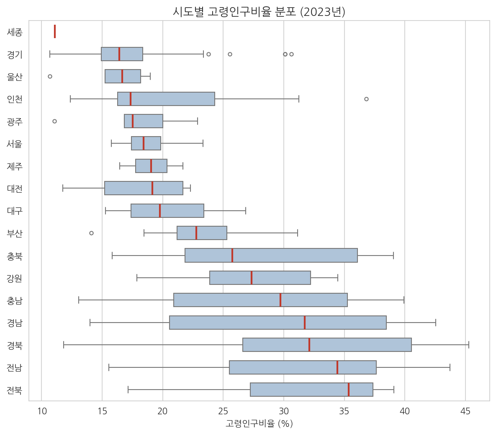
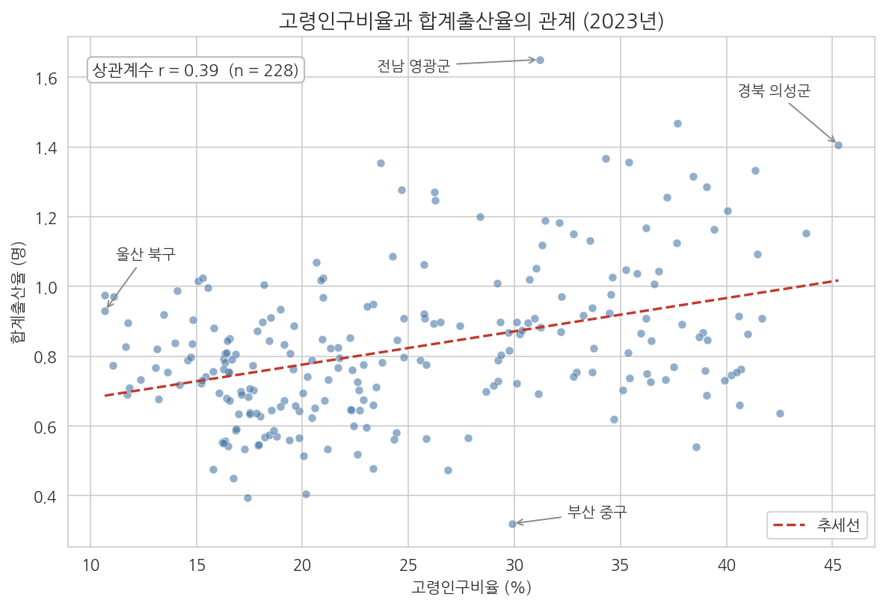
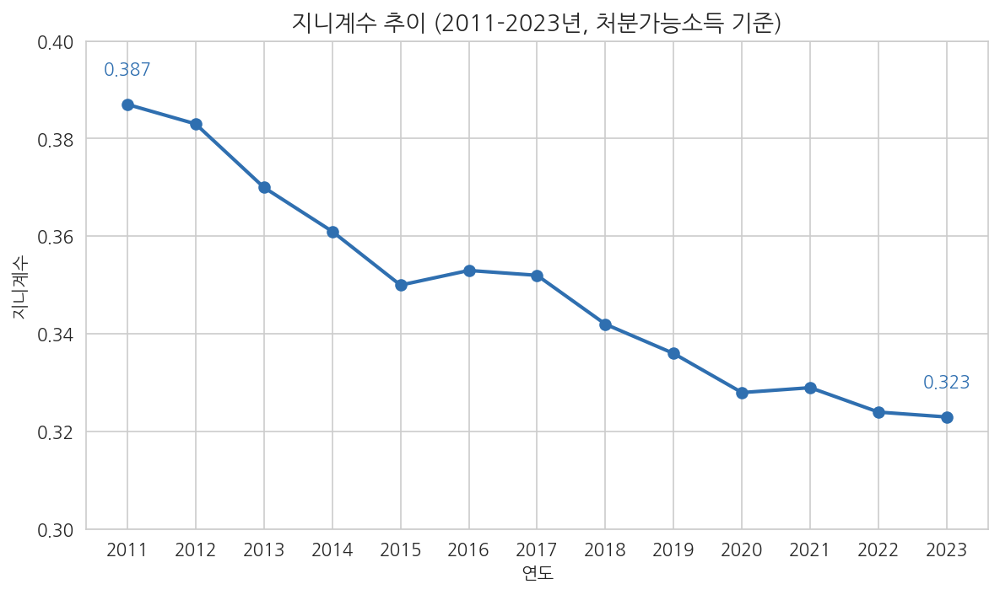
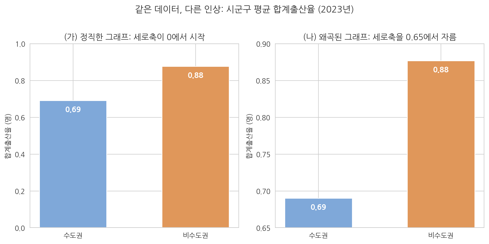

8주차 1회차. 탐색적 데이터 분석과 시각화
그림의 가장 큰 가치는, 우리가 전혀 예상하지 못했던 것을 알아차리도록 강제할 때 드러난다. (존 튜키, 『탐색적 데이터 분석』)
이 장에서 배우는 것
7주차까지의 여정을 돌아보자. 데이터를 찾고(5주차), API로 수집하고(6주차), 결측과 이상치를 손보아 깔끔한 표로 만들었다(7주차). 이제 여러분의 폴더에는 분석할 준비가 된 데이터가 놓여 있다. 그런데 막상 그 앞에 앉으면 막막해진다. 229행 12열의 표를 뚫어지게 쳐다본다고 해서 그 안의 이야기가 눈에 들어오지는 않기 때문이다. 사람의 눈은 숫자의 표를 읽는 데 서툴고, 그림을 읽는 데 놀랄 만큼 능하다. 그래서 분석의 다음 단계는 계산이 아니라 그리기다.
이번 주에 다루는 탐색적 데이터 분석(EDA)은 본격적인 통계 분석(9주차)에 들어가기 전에 데이터를 그림으로 이리저리 살펴보는 단계다. 에이전트 시대에 이 단계의 분업은 분명하다. 그림을 그리는 손은 에이전트가 대신한다. 히스토그램이든 산점도든, 한국어 한 문장이면 몇 초 만에 나온다. 그러나 그려진 그림에서 무엇을 읽어 낼지, 그 그림이 정직한지 왜곡되었는지 가려내는 눈은 온전히 여러분의 몫으로 남는다. 이 장은 그 눈을 기르는 장이다.
구체적으로 다음을 배운다.
- EDA가 무엇이며 왜 가설보다 먼저 데이터에게 묻는지
- 변수 하나의 분포를 보는 그림: 히스토그램과 박스플롯
- 변수 두 개의 관계를 보는 그림: 산점도와 상관
- 시간의 흐름을 보는 시계열 그림, 그리고 공간을 보는 지도의 개념
- 같은 데이터로도 독자를 속일 수 있다는 것: 시각화의 윤리
- 에이전트 시대에 "그림을 읽는 능력"이 왜 분석가의 핵심 역량인지
이 장은 하나의 질문을 따라 전개된다. "에이전트가 그림을 그려 주는 시대에, 사람은 그림 앞에서 무엇을 해야 하는가?"
1.1 EDA의 철학을 이해한다 (가설보다 먼저 데이터에게 묻는다) → 1.2 변수 하나의 분포를 그림으로 본다 (히스토그램, 박스플롯) → 1.3 변수 두 개의 관계를 본다 (산점도, 상관) → 1.4 시간과 공간을 본다 (시계열 그림, 지도의 개념) → 1.5 정직한 그래프와 왜곡된 그래프를 가려낸다 (시각화의 윤리) → 1.6 에이전트와 나의 분업을 정리한다 (그리는 것은 에이전트, 읽는 것은 나).
1.1 EDA: 가설보다 먼저 데이터에게 묻는다
취조가 아니라 면담
새로 발령받은 주무관이 처음 만나는 담당 업무 데이터를 대하는 두 가지 태도를 상상해 보자.
첫 번째 태도는 취조다. 이미 결론을 정해 두고 데이터에서 그 증거만 찾는다. "우리 시의 저출산은 보육시설 부족 탓이야. 그걸 보여 주는 숫자를 뽑아 와." 이런 접근은 빠르지만 위험하다. 데이터에는 대개 어느 쪽 주장이든 뒷받침할 조각이 하나쯤 들어 있어서, 찾으려고 들면 찾아지기 때문이다. 결론을 정해 놓고 증거를 고르면, 분석은 설득의 도구로 전락한다.
두 번째 태도는 면담이다. 결론을 유보하고 데이터가 하는 말을 먼저 듣는다. "출산율 데이터를 받았으니, 우선 어떤 모양인지 보자. 어디가 높고 어디가 낮지? 예상 밖의 지역은 없나? 이상한 값은 없나?" 이렇게 데이터의 전체 생김새를 열린 눈으로 살펴보는 과정을 탐색적 데이터 분석이라 한다.
탐색적 데이터 분석(exploratory data analysis, EDA)은 정해진 가설을 검증하기에 앞서, 그림과 요약을 통해 데이터의 분포·관계·패턴·예외를 폭넓게 살펴보는 분석 단계다. 통계학자 존 튜키(John Tukey)가 1977년의 책에서 정립한 개념으로, 핵심 도구는 수식이 아니라 그림이다.
EDA가 "가설보다 먼저"인 데는 실용적인 이유도 있다. 첫째, 데이터의 문제를 잡아낸다. 7주차에서 정제를 마쳤더라도, 그림을 그려 보면 미처 못 본 이상한 값이 눈에 띄곤 한다. 히스토그램의 외딴 막대 하나, 산점도의 동떨어진 점 하나가 입력 오류의 신호일 수 있다. 둘째, 물어볼 가치가 있는 질문을 만들어 준다. 9주차에서 우리는 "이 차이가 우연인가"를 통계로 따지게 되는데, 어떤 차이를 따질지는 EDA에서 발견한 패턴이 정해 준다. 탐색 없이 세운 가설은 과녁 없이 쏘는 화살과 같다.
왜 표가 아니라 그림인가
요약통계량(평균, 중앙값 등)도 데이터를 압축해 주는데, 굳이 그림까지 그리는 이유가 있을까. 있다. 요약은 압축이고, 압축은 반드시 무언가를 버린다. 평균이 같아도 분포의 모양이 전혀 다른 두 데이터가 얼마든지 존재한다. 한쪽은 값들이 평균 근처에 옹기종기 모여 있고, 다른 쪽은 아주 낮은 무리와 아주 높은 무리로 갈라져 있을 수 있다. 평균이라는 숫자 하나만 보면 두 상황을 구별할 수 없지만, 히스토그램을 그리면 한눈에 갈린다. 정책의 관점에서 이 구별은 사소하지 않다. 모두가 평균 근처인 사회와 두 극단으로 쪼개진 사회는 전혀 다른 처방을 요구하기 때문이다.
이 장의 도입 인용구가 말하는 바가 그것이다. 그림의 가치는 예쁘게 꾸미는 데 있지 않고, 예상하지 못한 것을 알아차리게 강제하는 데 있다. 표를 볼 때 우리는 찾으려는 것만 찾지만, 그림을 볼 때는 찾지 않던 것이 눈에 들어온다.
1.2 하나의 변수: 분포 보기 (히스토그램, 박스플롯)
EDA의 순서는 간단한 데서 복잡한 데로 간다. 변수 하나의 생김새부터 보고(일변량), 그다음 변수 둘의 관계를 보고(이변량), 필요하면 시간과 공간으로 넓힌다. 이 절부터는 7주차까지 다듬어 온 실제 데이터, 곧 전국 229개 시군구의 인구 지표(data/sigungu_2023.csv, 행정안전부 주민등록인구와 국가데이터처(옛 통계청) 인구동향조사를 KOSIS에서 수집)로 그림을 그려 가며 설명한다.
히스토그램: 값들은 어디에 몰려 있는가
변수 하나를 받았을 때 가장 먼저 물을 질문은 이것이다. "값들이 어디에 몰려 있고, 어디까지 퍼져 있으며, 어느 쪽으로 치우쳐 있는가." 이 질문에 답하는 표준 그림이 히스토그램이다. 만드는 원리는 단순하다. 변수의 값 범위를 일정한 폭의 구간으로 자르고, 각 구간에 몇 개의 관측치가 드는지 세어 막대의 높이로 그린다. 막대를 서로 붙여 그리는 것은 값이 끊김 없이 이어지는 연속형 변수라는 표시다.
시군구 고령인구비율(전체 인구 중 65세 이상의 비율)의 히스토그램을 보자.

그림 읽는 법부터 익히자. 가로축은 고령인구비율(%)이고, 세로축은 각 구간(폭 2.5%포인트)에 속한 시군구의 수다. 빨간 파선은 중앙값(22.7%), 감색 점선은 평균(25.0%)의 위치다. 막대들의 전체 윤곽이 이 변수의 분포다.
이 그림에서 세 가지가 읽힌다. 첫째, 봉우리는 왼쪽에 있다. 가장 높은 막대는 15-17.5% 구간(36곳)이며, 전형적인 시군구의 고령인구비율은 15-25% 사이다. 둘째, 오른쪽으로 꼬리가 길다. 30%를 넘는 시군구가 완만한 언덕을 이루며 45% 부근까지 이어진다. 전국에서 가장 높은 경북 의성군은 45.3%로, 주민 두 명 중 한 명 가까이가 65세 이상이다. 이렇게 한쪽으로 꼬리가 끌리는 분포를 치우친(skewed) 분포라 하며, 여기서는 오른쪽으로 치우쳤다. 셋째, 평균(25.0%)이 중앙값(22.7%)보다 오른쪽에 있다. 꼬리 쪽의 큰 값들이 평균을 끌어올리기 때문이다. 치우친 분포에서 평균과 중앙값이 벌어지는 이유를 그림이 눈으로 보여 주는 셈이다.
이 분포 하나가 던지는 정책적 함의도 작지 않다. 인구학에서 널리 쓰는 기준으로 고령인구비율 20% 초과를 초고령사회라 부르는데, 그림에서 20% 오른쪽에 놓인 막대들을 세어 보면 229곳 중 142곳, 전체의 62%다. 한국의 고령화는 평균의 문제가 아니라 다수 지역의 현재라는 것, 그리고 그 정도가 지역마다 10%대부터 40%대까지 극단적으로 다르다는 것. 표에서는 흐릿하던 사실이 그림에서는 또렷하다.
히스토그램의 인상은 구간(bin)의 폭에 따라 달라진다. 폭을 너무 넓게 잡으면 막대가 몇 개 안 남아 분포의 세부가 뭉개지고, 너무 좁게 잡으면 우연한 들쭉날쭉함이 과장된다. 에이전트에게 히스토그램을 시키면 에이전트가 폭을 임의로 정하는데, 그 선택에 따라 그림의 인상이 바뀔 수 있다는 점을 기억해 두자. 미심쩍으면 "구간 폭을 바꿔서 두 가지 버전으로 그려 줘"라고 지시해 윤곽이 유지되는지 확인하면 된다. 폭을 바꿔도 살아남는 패턴이 진짜 패턴이다.
박스플롯: 여러 집단을 한 줄에 세워 비교하기
히스토그램으로 전국의 분포를 보았다면, 자연스러운 다음 질문은 "지역에 따라 다른가"이다. 17개 시도별로 히스토그램을 17장 그릴 수도 있지만, 나란히 놓고 비교하기가 어렵다. 여러 집단의 분포를 압축해 한 화면에서 비교하는 표준 도구가 박스플롯이다.
박스플롯(box plot, 상자그림)은 한 분포를 상자 하나로 요약한 그림이다. 상자의 양 끝은 1사분위수(작은 쪽에서 25% 지점)와 3사분위수(75% 지점)이므로, 상자는 자료의 한가운데 50%가 차지하는 범위다. 상자 안의 선은 중앙값이다. 상자에서 양쪽으로 뻗은 선(수염)은 통상적인 범위의 자료 끝까지 이어지고, 그 밖으로 벗어난 값은 이상치로 점을 찍어 따로 표시한다.
17개 시도의 고령인구비율을 중앙값이 낮은 순으로 정렬해 그렸다.

그림 읽는 법. 가로축이 고령인구비율(%)이고, 시도마다 상자 하나가 그 시도에 속한 시군구들의 분포를 요약한다. 상자의 위치는 그 시도의 고령화 수준을, 상자의 길이는 시도 내부의 지역 간 격차를 말해 준다. 빨간 선이 중앙값, 상자 밖의 동그라미가 이상치다.
읽어 낼 수 있는 것이 세 겹이다. 첫째, 시도 사이의 차이. 경기(중앙값 16.4%), 울산(16.7%), 인천(17.4%), 서울(18.4%) 등 수도권과 대도시의 상자는 왼쪽에, 경북(32.1%), 전남(34.4%), 전북(35.4%)의 상자는 오른쪽에 있다. 관측치가 1개뿐인 세종을 논외로 하면, 중앙값이 가장 낮은 경기와 가장 높은 전북의 차이가 19%포인트에 이른다. 둘째, 시도 안의 차이. 서울의 상자는 짧아서(사분위 범위 약 2.4%포인트) 25개 자치구가 비슷비슷하다는 것을 보여 주는 반면, 경남의 상자는 매우 길다. 같은 경남 안에 김해시(14.0%)와 합천군(42.5%)이 공존하기 때문이다. 고령화의 격차는 시도 대 시도의 문제이면서 동시에 같은 시도 안 도시 대 농촌의 문제이기도 하다. 셋째, 예외적인 지역. 인천의 상자 오른쪽 끝에 동그라미로 찍힌 이상치는 강화군(36.8%)이다. 젊은 수도권 광역시 안의 늙은 농촌이라는, 평균으로는 절대 보이지 않는 사실이 점 하나로 드러난다.
한 가지 주의할 것이 있다. 맨 위의 세종은 상자 없이 선 하나로만 그려져 있는데, 오류가 아니다. 세종특별자치시는 시군구 단위 데이터에서 관측치가 1개뿐이라 분포라 할 것이 없기 때문이다. 그림에서 이상해 보이는 부분을 발견하면 "왜 이렇게 그려졌지"라고 물어야 한다. 답은 대개 데이터의 구조에 있다.
박스플롯은 관측치가 5개든 500개든 같은 크기의 상자로 그려진다. 세종(1개)이나 제주(2개)처럼 관측치가 적은 집단의 상자는 통계적으로 말해 주는 바가 거의 없다. 집단 비교 그림을 읽을 때는 반드시 각 집단의 관측치 수(n)를 함께 확인하는 습관을 들이자. 에이전트에게 "각 집단의 관측치 수도 함께 표로 알려 줘"라고 지시하면 된다.
1.3 두 변수: 관계 보기 (산점도, 상관)
산점도: 점 하나가 시군구 하나
분포를 보았으면 다음은 관계다. "고령화가 심한 지역일수록 출산율이 낮을까?" 같은 질문은 변수 두 개를 동시에 보아야 답할 수 있다. 두 연속형 변수의 관계를 보는 표준 그림이 산점도(scatter plot)다. 한 변수를 가로축에, 다른 변수를 세로축에 놓고, 관측치 하나(여기서는 시군구 하나)를 점 하나로 찍는다. 점들의 구름이 이루는 모양이 두 변수의 관계다.
방금의 질문을 실제로 그려 보자. 가로축에 고령인구비율, 세로축에 합계출산율(여성 1명이 평생 낳을 것으로 기대되는 아이 수)을 놓았다.

그림 읽는 법. 점 228개가 각각 시군구 하나다(전체 229곳 중 합계출산율이 결측인 1곳은 제외되었다. 7주차에서 다룬 결측이 여기서도 따라다닌다). 빨간 파선은 점 구름의 전반적 흐름을 요약한 추세선이고, 왼쪽 위의 상자 안에 상관계수가 표시되어 있다.
그런데 이 그림은 많은 사람의 예상을 배반한다. "고령화가 심하면 출산율이 낮겠지"라는 직관과 달리, 점 구름은 오른쪽으로 갈수록 오히려 완만하게 올라간다. 고령인구비율이 높은 시군구일수록 합계출산율도 높은 경향, 곧 양의 상관이다. 극단을 짚어 보면 더 뚜렷하다. 합계출산율 전국 최저는 부산 중구(0.32명)로 고령인구비율 29.9%의 도심이고, 전국 최고는 전남 영광군(1.65명)으로 고령인구비율 31.2%의 농촌이다. 전국에서 가장 늙은 의성군(고령인구비율 45.3%)의 출산율은 1.41명으로 서울의 어느 구보다도 높다.
이 역설은 합계출산율이라는 지표의 정의를 알면 풀린다. 합계출산율은 아이의 수를 지역 전체 인구가 아니라 가임기 여성의 수에 견준 비율이다. 농촌 군 지역은 젊은 여성의 수 자체가 매우 적지만, 남아 있는 젊은 여성이 아이를 낳는 비율은 대도시보다 높다. 반대로 대도시는 젊은 인구가 많이 모여 있어도 출산으로 이어지는 비율이 낮다. 그러니 이 그림에서 "고령화가 출산율을 높인다"는 인과의 결론을 읽어 내면 안 된다. 그림이 실제로 보여 주는 것은, 저출산 문제의 지형이 "젊은 도시 대 늙은 농촌"이라는 통념보다 복잡하다는 사실이다. 그림은 답을 주지 않았지만 훨씬 좋은 질문을 주었다. 이것이 EDA가 하는 일이다.
상관계수: 관계의 방향과 세기를 숫자 하나로
산점도의 인상을 숫자 하나로 요약한 것이 상관계수다.
상관계수(correlation coefficient, 기호 r)는 두 변수의 직선적 관계의 방향과 세기를 -1과 1 사이의 숫자로 나타낸 지표다. 한 변수가 클수록 다른 변수도 큰 경향이면 양수, 반대 경향이면 음수다. 절댓값이 1에 가까울수록 점들이 직선에 가깝게 늘어서고, 0에 가까울수록 뚜렷한 직선 관계가 없다.
그림 8-3의 상관계수는 r = 0.39다. 방향은 양(+)이고, 세기는 어중간하다. 점들이 추세선 주위에 넓게 흩어져 있는 데서 보이듯, 고령인구비율만으로 출산율이 결정되는 것은 결코 아니다. 참고로 같은 데이터에서 인구밀도(로그 변환)와 고령인구비율의 상관계수를 계산하면 r = -0.74로, 사람이 빽빽이 모여 사는 곳일수록 젊다는 훨씬 강한 관계가 나온다.
숫자 하나로 요약되니 편리하지만, 두 가지 함정을 지금 새겨 두어야 한다. 첫째, 상관계수는 직선 관계만 잡아낸다. 두 변수가 U자형처럼 굽은 관계를 가지면 r이 0에 가깝게 나올 수 있으므로, 상관계수만 보고 "관계가 없다"고 단정하면 안 된다. 산점도를 먼저 보고 상관계수를 보는 순서가 안전하다. 둘째, 상관은 인과가 아니다. 여름철 아이스크림 판매량과 물놀이 사고 건수는 강한 양의 상관을 보이지만, 아이스크림이 사고를 일으키는 것이 아니라 더위라는 제3의 요인이 둘 다를 끌어올린다. r이 아무리 크더라도 "A가 B를 일으킨다"는 문장은 상관계수에서 나오지 않는다. 이 함정은 정책 해석에서 특히 치명적이므로 9주차에서 본격적으로 다룬다.
그림 8-3의 점은 사람이 아니라 시군구다. 따라서 이 그림이 보여 주는 것은 "고령 지역일수록 출산율이 높다"는 지역 수준의 관계이지, "고령자가 많은 동네에 사는 젊은 여성이 아이를 더 낳는다"는 개인 수준의 사실이 아니다. 집단 단위의 상관을 개인에게 그대로 적용하는 오류를 생태학적 오류(ecological fallacy)라 한다. 시군구·시도 단위 공공데이터를 다루는 우리에게는 늘 따라다니는 함정이다.
1.4 시간과 공간: 시계열 그림과 지도
시계열 그림: 가로축이 시간이 될 때
지금까지의 그림은 2023년이라는 한 시점의 단면이었다. 그러나 정책의 질문은 "지금 얼마인가" 못지않게 "어디로 가고 있는가"를 묻는다. 시간에 따라 기록된 데이터를 시계열(time series)이라 하고, 가로축에 시간을, 세로축에 값을 놓고 점을 선으로 이은 그림을 시계열 그림이라 한다. 점을 선으로 잇는 것은 관측치들이 시간 순서로 연결된 하나의 흐름이라는 뜻이다. 시군구처럼 순서가 없는 범주를 선으로 이으면 안 되는 것과 대비된다.
소득 불평등의 대표 지표인 지니계수의 추이를 보자(data/income_dist.csv, 국가데이터처 소득분배지표, KOSIS에서 수집). 지니계수는 0(모두의 소득이 같음)부터 1(한 사람이 모든 소득을 가짐) 사이의 값으로 불평등의 정도를 나타낸다.

그림 읽는 법. 가로축은 연도(2011-2023년), 세로축은 지니계수다. 시계열 그림에서는 세 가지를 순서대로 본다. 먼저 전체의 추세(오르는가, 내리는가, 평평한가), 다음으로 추세가 꺾이는 지점, 마지막으로 추세에서 벗어난 예외적인 해.
이 그림의 추세는 꾸준한 하락이다. 지니계수는 2011년 0.387에서 2023년 0.323으로 12년에 걸쳐 약 17% 낮아졌다. 지표상 처분가능소득 기준의 불평등이 완화되어 온 것이다. 세부를 보면 매끄러운 직선은 아니어서, 2016년(0.350에서 0.353으로)과 2021년(0.328에서 0.329로)에 소폭의 반등이 있었다. 이런 미세한 굴곡 하나하나에 서사를 붙이는 것은 과잉해석이 되기 쉽지만, 추세가 꺾이는 듯한 지점은 "그해에 무슨 일이 있었나"를 추가로 조사할 후보 목록이 된다. 그림 8-4를 읽을 때 한 가지 더 확인할 것이 있다. 세로축이 0이 아니라 0.30에서 시작한다는 점이다. 이 선택이 그림의 인상을 어떻게 바꾸는지는 바로 다음 절의 주제다.
지도: 공간 위의 데이터 (개념만)
시군구 데이터에는 시간 축 못지않게 중요한 축이 하나 더 있다. 공간이다. 그림 8-2의 박스플롯은 시도별 차이를 보여 주지만, 어느 지역이 어디에 붙어 있는지는 말해 주지 못한다. 값을 지리적 위치 위에 얹어 보여 주는 그림이 지도이고, 그중 행정구역을 값의 크기에 따라 색의 진하기로 칠한 지도를 단계구분도(choropleth map)라 한다. 고령인구비율 단계구분도를 그리면, 수도권과 대도시가 옅고 남서부와 경북 내륙의 농촌이 짙은, 고령화의 공간적 뭉침이 한눈에 드러난다.
다만 지도를 실제로 그리려면 행정구역의 경계 좌표 파일이 따로 필요하고, 행정구역 개편(7주차에서 본 문제다)으로 경계 파일과 데이터의 지역 코드가 어긋나는 일도 잦다. 그래서 이 교재에서 지도는 개념 소개에 그치고, 실습은 히스토그램·박스플롯·산점도·시계열 네 가지에 집중한다. 지도를 읽을 때의 유의점 하나만 기억해 두자. 단계구분도에서는 면적이 넓은 농촌이 시각적으로 과대 대표된다. 인구 1,000만의 서울은 지도에서 작은 얼룩이지만 인구 2만의 군은 넓은 면으로 칠해지므로, 지도가 주는 "국토 대부분이 짙다"는 인상과 "인구 대부분이 어떠하다"는 사실은 전혀 다를 수 있다.
1.5 좋은 그래프, 나쁜 그래프: 시각화의 윤리
같은 데이터, 다른 인상
그림은 강력하다. 그리고 강력한 것은 오용될 수 있다. 숫자를 조작하는 것은 명백한 거짓이지만, 숫자는 그대로 두고 그림의 문법만 손보아 독자의 인상을 조작하는 일은 훨씬 흔하고 훨씬 들키기 어렵다. 가장 고전적인 수법이 세로축 자르기다.
수도권(서울·경기·인천)과 비수도권 시군구의 평균 합계출산율은 각각 0.69명과 0.88명이다. 같은 두 숫자를 두 가지 방식으로 그렸다.

그림 읽는 법. 두 패널의 데이터는 완전히 같고, 다른 것은 세로축의 시작점뿐이다. 왼쪽(가)은 세로축이 0에서 시작한다. 막대의 높이 비가 실제 값의 비(0.69 대 0.88, 약 1.3배)와 일치하므로, 눈에 보이는 차이가 곧 실제 차이다. 오른쪽(나)은 세로축을 0.65에서 잘랐다. 수도권 막대는 바닥에 붙고 비수도권 막대는 6배 가까이 높아 보인다. 실제로는 1.3배 차이가 시각적으로는 몇 배의 차이로 부풀려진 것이다.
막대그래프에서 이것이 왜곡인 이유는 분명하다. 막대그래프는 막대의 길이로 값을 나타내겠다는 약속 위에 서 있는데, 축을 자르면 길이의 비가 값의 비와 어긋나 약속이 깨진다. 그래서 막대그래프의 세로축은 0에서 시작하는 것이 원칙이다. 반면 그림 8-4 같은 시계열 선 그림은 값의 크기보다 변화의 방향과 굴곡을 보여 주는 그림이므로, 축 범위를 데이터 근처로 좁히는 것이 관행으로 허용된다. 지니계수처럼 0부터 그리면 변화가 아예 안 보이는 경우도 있다. 다만 허용된다는 것이지 인상이 중립이라는 뜻은 아니다. 같은 하락도 축을 좁힐수록 가파른 폭락처럼 보인다. 그림을 읽는 쪽의 방어 수칙은 하나로 요약된다. 어떤 그래프든 축의 숫자부터 읽는다.
그 밖의 흔한 왜곡 수법들
세로축 자르기 외에 공공 보고서와 언론에서 자주 마주치는 수법 몇 가지를 알아 두자.
표 8-1. 흔한 시각화 왜곡 수법과 방어법
| 수법 | 무엇이 문제인가 | 읽는 사람의 방어법 |
|---|---|---|
| 세로축 자르기 | 막대 길이의 비가 값의 비와 어긋난다 | 축의 시작점을 확인한다 |
| 이중 축 | 왼쪽·오른쪽 두 세로축의 눈금을 조절해 무관한 두 변수가 함께 움직이거나 교차하는 것처럼 연출할 수 있다 | 두 축의 단위와 범위를 각각 읽고, 교차·동행의 인상을 무시한다 |
| 3D 효과 | 원근 때문에 앞쪽 조각이 실제보다 커 보인다. 특히 3D 원그래프가 심하다 | 각 항목의 실제 수치를 찾아 확인한다 |
| 그림문자 크기 | 값이 2배일 때 그림의 가로·세로를 각각 2배로 키우면 넓이는 4배가 되어 과장된다 | 길이가 아닌 넓이·부피로 표현된 그림을 의심한다 |
| 누적 기간 조절 | 시계열의 시작 연도를 유리하게 골라 "역대 최대 증가" 같은 인상을 만든다 | 더 긴 기간의 데이터를 찾아본다 |
이 표를 관통하는 원리는 하나다. 그림의 시각적 요소(길이, 넓이, 기울기)가 데이터의 값과 비례 관계를 유지하면 정직한 그림이고, 그 비례를 슬쩍 깨뜨리면 왜곡이다. 여러분은 이 수법들을 두 방향에서 알아야 한다. 읽는 사람으로서 속지 않기 위해서, 그리고 만드는 사람으로서 저지르지 않기 위해서다. 공공기관의 이름으로 나가는 그래프가 왜곡을 담고 있으면, 그것이 실수였더라도 기관의 신뢰가 값을 치른다.
왜곡은 악의에서만 나오지 않는다. 그래프 도구들은 보기 좋으라고 축 범위를 데이터에 맞춰 자동으로 좁히곤 하며, 에이전트도 지시가 없으면 그 기본값을 따른다. 즉 여러분이 시키지 않아도 축이 잘린 막대그래프가 나올 수 있다. 에이전트가 만든 그래프를 받으면 축의 시작점 확인을 검증 목록에 반드시 넣어야 하는 이유다. 이 확인은 2회차 실습에서 직접 해 본다.
좋은 그래프의 조건
왜곡을 피하는 것은 최소 조건이고, 좋은 그래프에는 갖출 것이 더 있다. 이 교재의 모든 그림이 따르는 기준이자, 여러분이 에이전트에게 요구해야 할 기준이다.
- 제목이 그림의 요지를 말한다. "그림 1"이 아니라 "시군구 고령인구비율의 분포"처럼, 제목만 읽어도 무엇을 그렸는지 알 수 있게 한다.
- 두 축에 라벨과 단위가 있다. "고령인구비율 (%)", "합계출산율 (명)"처럼 무엇을 어떤 단위로 쟀는지 밝힌다. 단위 없는 축은 읽을 수 없는 축이다.
- 데이터의 출처와 시점이 어딘가에 밝혀져 있다. 그림 안이든 캡션이든, 이 숫자가 어디서 온 언제 것인지를 독자가 추적할 수 있어야 한다.
- 잉크가 데이터를 위해 쓰인다. 화려한 배경, 불필요한 3D, 과도한 색은 데이터를 가린다. 장식이 아니라 정보가 주인공이다.
1.6 그리는 것은 에이전트, 읽는 것은 나
이 장의 내용을 에이전트 시대의 분업으로 정리하자. 1주차에서 배운 지시·검증·해석의 순환이 EDA에서 어떻게 구체화되는지의 문제다.
그리는 일은 에이전트의 몫이다. 불과 몇 년 전까지 이 장의 그림 다섯 개를 만들려면 matplotlib라는 그림 도구의 명령어 수십 개를 익혀야 했다. 지금은 "고령인구비율 히스토그램을 그리고 중앙값을 표시해 줘"라는 한국어 한 문장이면 된다. 그림의 문법(어느 그림을 쓸지)을 지정하는 것도, 축과 제목을 다듬으라고 요구하는 것도 지시로 해결된다.
그러나 읽는 일은 사람의 몫으로 남는다. 여기서 읽기는 세 층위다. 첫째 층위는 기술적 읽기다. 축이 무엇이고 점과 막대가 무엇을 나타내는지 파악한다(모든 그림의 "그림 읽는 법"). 둘째 층위는 패턴 읽기다. 치우침, 이상치, 추세, 상관 같은 구조를 알아본다. 이 장에서 배운 어휘들이 이 층위의 도구다. 셋째 층위는 의미 읽기다. 그 패턴이 우리 정책 맥락에서 무엇을 뜻하는지, 어떤 새 질문을 낳는지 판단한다. 그림 8-3에서 양의 상관을 발견하는 것이 둘째 층위라면, "그렇다면 저출산 대책의 초점은 어디여야 하는가"라는 질문으로 나아가는 것이 셋째 층위다.
에이전트는 첫째 층위를 대신해 줄 수 있고 둘째 층위도 제법 흉내 낸다. 실제로 에이전트에게 그림을 시키면 "오른쪽으로 치우친 분포입니다" 같은 해설을 함께 내놓는다. 그러나 그 해설은 검증의 대상이지 결론이 아니다. 에이전트는 그림을 눈으로 보는 것이 아니라 데이터의 숫자로 미루어 말하는 것이어서, 그럴듯하지만 어긋난 해설이 나올 수 있다. 그리고 셋째 층위, 곧 우리 지역의 사정과 제도를 아는 사람만이 할 수 있는 의미 부여는 애초에 에이전트의 것이 아니다. 1주차에서 말한 행정학도의 비교우위가 EDA에서는 바로 이 지점에 있다.
마지막으로 다음 주를 예고해 둔다. EDA는 패턴을 발견하는 단계이지 확정하는 단계가 아니다. 그림 8-5에서 본 수도권과 비수도권의 출산율 차이 0.19명은 눈에 보이는 차이다. 그런데 눈에 보이는 차이가 우연의 산물일 가능성은 없는가. 이 질문에 답하려면 그림 너머의 도구, 곧 통계적 추론이 필요하다. 9주차에서 우리는 "이 차이는 우연인가"를 따지는 법을 배운다. 그림으로 질문을 만들고, 통계로 그 질문을 검증하는 것. 그것이 3부 전체의 흐름이다.
요약
탐색적 데이터 분석(EDA)은 가설 검증에 앞서 그림으로 데이터의 분포·관계·패턴·예외를 살펴보는 단계로, 결론을 정해 놓고 증거를 찾는 취조가 아니라 데이터의 말을 먼저 듣는 면담이다(1.1). 변수 하나의 분포는 히스토그램(값이 몰린 곳, 퍼짐, 치우침)과 박스플롯(여러 집단의 압축 비교)으로 본다. 시군구 고령인구비율은 오른쪽으로 치우친 분포이며, 시도 사이의 격차와 시도 안 도시·농촌 격차가 겹쳐 있다(1.2). 두 변수의 관계는 산점도로 보고 상관계수로 요약한다. 고령인구비율과 합계출산율은 통념과 반대로 양의 상관(r = 0.39)을 보이는데, 이는 인과가 아니라 더 좋은 질문의 출발점이며, 집단의 상관을 개인에게 적용하는 생태학적 오류를 경계해야 한다(1.3). 시계열 그림은 추세·전환점·예외를 읽는 그림이고(지니계수는 2011년 0.387에서 2023년 0.323으로 하락), 지도는 값의 공간적 뭉침을 보여 주되 면적 큰 지역이 과대 대표되는 함정이 있다(1.4). 세로축 자르기, 이중 축, 3D 효과 같은 수법은 숫자를 그대로 둔 채 인상을 조작하며, 방어법은 축의 숫자부터 읽는 습관이다. 좋은 그래프는 요지를 말하는 제목, 단위 있는 축 라벨, 출처를 갖춘다(1.5). 에이전트 시대의 분업에서 그리기는 에이전트의 몫이지만, 패턴을 알아보고 정책적 의미를 부여하고 왜곡을 가려내는 읽기는 분석가의 몫이다(1.6).
연습문제
8-1. 그림 고르기. 다음 네 가지 질문에 각각 어떤 그림(히스토그램, 박스플롯, 산점도, 시계열 그림)이 가장 적합한지 고르고, 이유를 한 문장씩 써 보라. (a) 우리 도 시군별 재정자립도는 최근 10년간 어떻게 변해 왔는가 (b) 전국 시군구의 1인당 지방세 부담액은 어떤 모양으로 퍼져 있는가 (c) 재정자립도가 높은 지역일수록 복지 예산 비중이 낮은가 (d) 특별시·광역시·도 세 유형 사이에 공무원 1인당 주민 수의 분포가 다른가
8-2. 그림 읽기. 그림 8-2(시도별 박스플롯)를 다시 보라. (a) 인천의 상자가 서울의 상자보다 훨씬 긴 이유를 인천의 행정구역 구성(도심의 구와 외곽의 군)을 떠올려 추측해 보라. (b) 어떤 시도의 "평균 고령인구비율"이 같더라도 상자의 길이가 다르면 정책적으로 무엇이 달라지는지 한 단락으로 써 보라.
8-3. 왜곡 잡아내기. 어느 기관의 보도자료에 "청년 취업자 수, 2배 증가 시각화"라는 막대그래프가 실렸다. 세로축은 130만 명에서 시작하고, 두 막대는 132만 명(작년)과 138만 명(올해)이다. (a) 실제 증가율은 몇 %인가. (b) 그림에서 막대의 높이는 몇 배로 보이겠는가. (c) 이 그래프를 정직하게 다시 그리려면 무엇을 바꿔야 하는가. (d) 신문 기사, 보고서, 광고 등에서 이 장의 표 8-1에 해당하는 실제 사례를 하나 찾아 어떤 수법이 쓰였는지 분석해 보라.